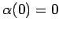
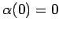
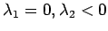

Inhalt Index DeskTop Bronstein

 Dynamische Systeme und Chaos Bifurkationstheorie, Wege zum Chaos Bifurkationen in Morse-Smale-Systemen Lokale Bifurkationen nahe Ruhelagen
Dynamische Systeme und Chaos Bifurkationstheorie, Wege zum Chaos Bifurkationen in Morse-Smale-Systemen Lokale Bifurkationen nahe Ruhelagen


Gegeben sei (17.17) mit  , wobei f mindestens zweimal stetig differenzierbar ist und Dxf(0,0) den Eigenwert
, wobei f mindestens zweimal stetig differenzierbar ist und Dxf(0,0) den Eigenwert  und n-1 Eigenwerte
und n-1 Eigenwerte  mit Re habe.
mit Re habe.
Nach dem Satz über die Zentrumsmannigfaltigkeit werden in diesem Fall alle Bifurkationen von (17.17) nahe 0 durch eine eindimensionale reduzierte Differentialgleichung (17.19) beschrieben. Offenbar ist dabei . Wird zusätzlich und  vorausgesetzt und die rechte Seite von (17.19) nach der TAYLOR-Formel entwickelt, so läßt sich diese Darstellung nach Lit. 17.13 durch Koordinatentransformation umformen zur Normalform
vorausgesetzt und die rechte Seite von (17.19) nach der TAYLOR-Formel entwickelt, so läßt sich diese Darstellung nach Lit. 17.13 durch Koordinatentransformation umformen zur Normalform
(bei ) bzw. (bei ), wobei  eine differenzierbare Funktion mit  ist und die Punkte Terme höherer Ordnung bedeuten. Für
eine differenzierbare Funktion mit  ist und die Punkte Terme höherer Ordnung bedeuten. Für  hat (17.20) nahe x = 0 zwei Ruhelagen, von denen eine stabil, die andere instabil ist. Bei verschmelzen diese zur Ruhelage
hat (17.20) nahe x = 0 zwei Ruhelagen, von denen eine stabil, die andere instabil ist. Bei verschmelzen diese zur Ruhelage  , die instabil ist. Für
, die instabil ist. Für  hat (17.20) keine Ruhelage nahe 0 (s. Abbildung).
hat (17.20) keine Ruhelage nahe 0 (s. Abbildung).
Die Übertragung auf den mehrdimensionalen Fall liefert eine Sattelknoten-Bifurkation nahe 0 in (17.17). Für n = 2 und  ist diese Bifurkation in der folgenden Abbildung zu sehen.
Die Darstellung der Sattelknoten-Bifurkation im erweiterten Phasenraum ist in der nächsten Abbildung dargestellt.
Für hinreichend glatte Vektorfelder (17.17) sind Sattelknoten-Bifurkationen generisch.
Wird in den Bedingungen an F für eine Sattelknoten-Bifurkation die Voraussetzung durch die Forderungen und ersetzt, so ergibt sich aus (17.19) die verkürzte Normalform (ohne Glieder höherer Ordnung) einer transkritischen Bifurkation. Für n = 2 und  ist die transkritische Bifurkation, zusammen mit dem Bifurkationsdiagramm, in der folgenden Abbildung gezeigt.
ist die transkritische Bifurkation, zusammen mit dem Bifurkationsdiagramm, in der folgenden Abbildung gezeigt.

Sattelknoten- und transkritische Bifurkation gehören zu den Kodimension-1-Bifurkationen.